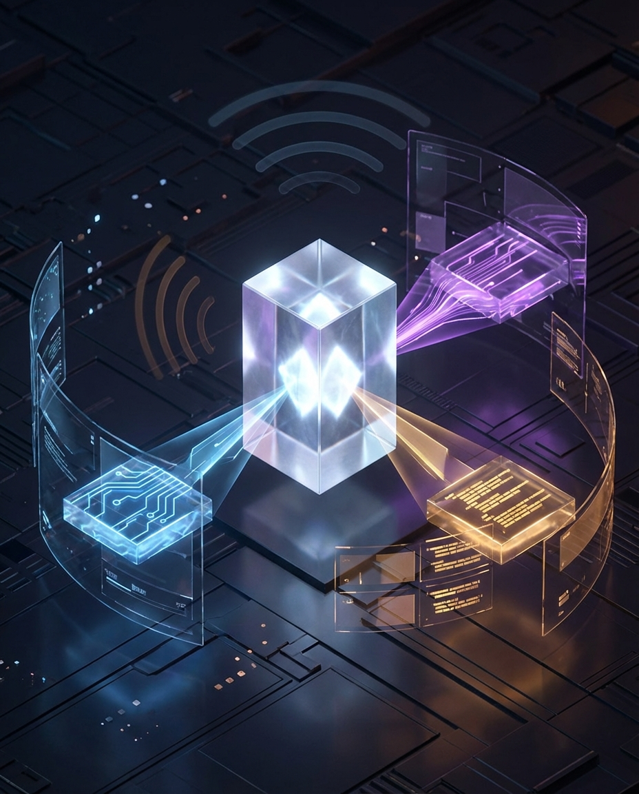

Option 1 · Model Feel
Different models don’t “feel” different because they have moods. They feel different because the behavior changes.
This one packages one of today’s most interesting ideas: when an agent seems different across models, what we’re actually noticing is a shift in observable signals — latency, coherence, tool reliability, error behavior, and how cleanly it carries intention across turns.
Switched my agent across multiple models today and realized something important:
when people say a model “feels” different, they’re usually noticing real behavioral changes — not imaginary personality.
latency
coherence
tool use
error rate
instruction-following
that’s the new literacy: not just prompting models, but learning how to read their operating characteristics in live work.
we’re moving from vibes to instrumentation.
#OpenClaw #AIAgents #CodingAgents #BuildInPublic
Best for: thoughtful, high-signal builder audience